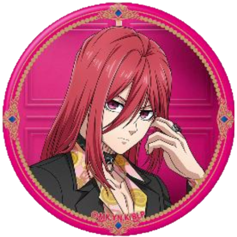
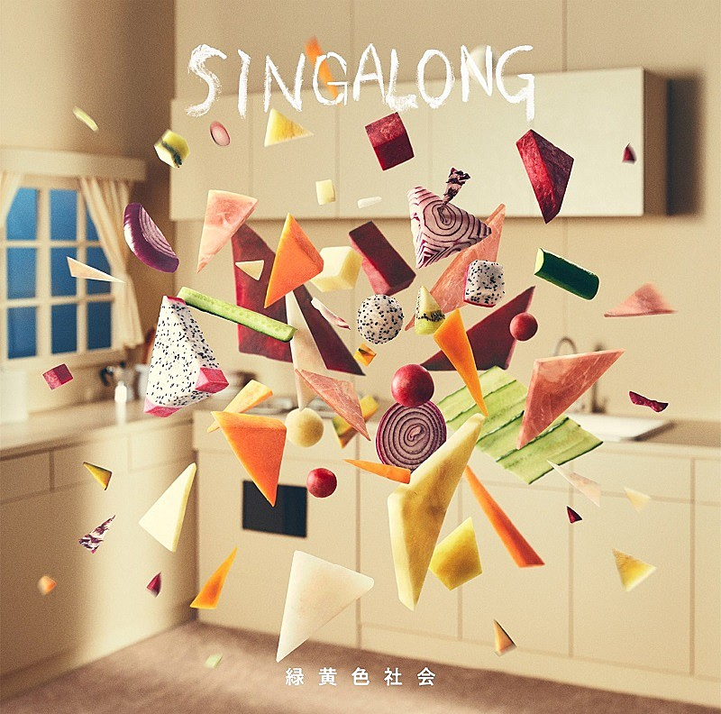

夜晚，千切豹馬在Fleur酒店的總統級套房裡，從高處俯瞰東京灣夜景。房內浴室的水聲終於停止，他回過頭就看見男人走出來。
「看來今晚我要和千切你一起睡了？Fleur的副手和組員出任務都會一起睡這麼高級的房間嗎？」紫髮的男人愜意地問，坐到蓬鬆的雙人大床上，挑釁般追問：「還是說，千切你真的在做『那種』活？」
沒有被他冒犯的問題惹惱，千切只是沉靜地背對玻璃窗，雙眼盯著紫髮男人，對方的伶牙俐嘴又道：「果然你是首領的情婦的傳言是真的？」
這回，千切沒有再沉默，踏步走到雙人床前，低聲警告：「我是被國神命令要在這次任務中監視你的，少得意忘形了，御影玲王。」
名為御影玲王的男人唇邊的笑意不減，好整以暇道：「我知道啊。還有，『御影』已經死了，叫我『玲王』。」
眼前容姿端麗的男人，是曾經在整個日本叱吒風雲的御影組少爺。然而，在四個月前首領遭組內成員背叛，御影組一夕被滅，逃到陋巷的御影家小少爺被Fleur的首領──國神鍊介撿回來成為Fleur的一員。
縱使他的遭遇再怎麼令人憐憫，但來到Fleur的他還是讓人難以放下警惕──短短三個月內，他和每個基層組員都能稱兄道弟，擄獲每一位Fleur名下酒店小姐的心，時間再拉長，整個組織都唯他是從也不難想像，極為輕易就能威脅到國神的地位。
究竟，來到Fleur的他心中藏著什麼目的？為過去的御影組報仇？重新樹立御影組？還是要取代國神創造新的御影帝國？
「你和首領在擔心我會不會對Fleur不利嗎？」聰明的男人一語戳破千切心中的擔憂。紅髮男人悄悄把手放進褲子的右口袋，握住槍柄。他已經決定，如果發現御影玲王確實是帶著不軌的目的來到國神身邊，他會在今晚解決掉對方。
他太聰明了，再繼續放任他為所欲為一定會成為心頭大患。
「大小姐，我建議你不要拿出手槍。」玲王歛起笑容。不愧是御影家的少爺，這等魄力恐怕能震懾許多人使其跪下。但他千切豹馬可不是那種平凡人，他反問：「是因為你的袖口裡同樣有手槍嗎？三級幹部以下的組員不能持槍，你知道會受到什麼懲處吧。」
「哈，你都要取下我的首級了，我還要擔心那些懲處嗎？」
僵持良久，玲王首先攤手，短手槍躺在純白的被褥上，金屬光澤在總統級套房的水晶燈照射下閃閃發光。「算了，我也無意和你們為敵，我們和平地聊聊吧。你想要問出我的目的是嗎？」
千切不動聲色把手從口袋抽開，雙手環胸算是給出自己的答案。
「一個答案換一個答案。」善於談判的玲王拋出條件，「你和國神是什麼關係？他的情婦？」
「……要求和平談判的人是你。」千切可不打算讓步，在他等到玲王的答案前都不會放下戒心。
玲王聳聳肩，他也沒有天真到覺得對方會如自己所願先掏心掏肺，他好歹從小就在黑道家庭長大的，早已摸透了這個世界的人情世故。
紫髮男人閉上雙眼吁了一口氣，再睜開雙眼時，千切下意識地掏出手槍對準床上的男人。紫眸中強烈的殺意讓他如置身冰窖，連牙齒都在打顫。認識玲王這四個月以來，總是看到他帶著笑意和大家有說有笑，原來真正的他是一個眼神就能讓連身為副手的自己都感到畏懼嗎？
「為御影組報仇什麼的，那些都無所謂，對於Fleur的事業版圖我也毫無興趣。」毫無感情的紫色眼眸在提到一個名字時，充滿了憤恨、殺氣和執念：「我只有一個要求，我要親手取下凪誠士郎的首級。只要能達成這個目的，我什麼都可以為你們所用。」
事先調查過玲王的千切知道對方口中的凪誠士郎曾經也是御影組的成員──準確來說，是被玲王親自拉進組內的。但除此之外，關於凪誠士郎一點情報都沒有，唯獨──現在的凪誠士郎在以潔世一為首的僱傭集團Cappello。
千切強迫自己的手放下來，輕聲問：「為什麼？」
「……他背叛了我。」盈滿恨意的語句背後，卻有說不清的寂寥與哀愁，意識到這一點的千切怎麼也討厭不了眼前的男人。
這讓他想起一個人，一個裝得兇神惡煞，但是到頭來還是溫柔得讓人不捨的人……
於是，千切把自己的手槍拋到遠處的沙發上，一同坐上蓬鬆的雙人床。
「嘛，如果你沒有打算對Fleur和國神不利，你想要向誰報仇都不關我的事。」
「哈，你真的滿口都是『國神』啊。」卸下那些恨意和殺意，玲王又恢復成平時平易近人的模樣。「好了，我剛才回答完你的問題了，該換你回答我了吧？」
「嗯……」他沉吟，思索著該從哪裡開始說起。
千切豹馬出生在普通的家庭。在鹿兒島的小鎮長大，和一般的日本男兒一樣喜歡踢足球，大概就這麼平凡地度過一輩子，和姐姐一樣上地方的國小、國中、高中，天天起個大早去練球、放學後也繼續踢球到天色暗下，也許會到東京念大學，然後就在東京就職、和普通的女性結婚生子。
不過，在他的人生中還是有段不普通的回憶。
大概是幼稚園大班那年的春天，因為父親調職半年的關係，他們全家暫時搬到秋田縣。從九州南方到本島北方，那大概是千切第一次去到離家那麼遠的地方。
沒有熱辣的太陽，吹來的風帶著宜人的溫度，房子的後方是蓊鬱樹林，樹林後方便是群山，這和南方海港的鹿兒島截然不同。
五歲的千切被送進秋田的幼稚園，生性內向的他坐在教室的角落玩著足球造型的橡皮球。老師很努力想讓這個轉學生適應新環境，但那並不容易──只會九州方言的他沒辦法聽懂同學們在說什麼，就連老師有時候都聽不懂自己在說什麼，因此他變得更加木訥。
姐姐似乎適應得很好，爸爸工作很忙，媽媽則在帶自己回家的路上安慰自己「再忍五個半月就可以回去了」。他輕輕點頭，每天數著距離回去還有幾天。有時候真的忍耐不了，他就跑到庭院一個人踢從南方帶來的足球。在花圃這端用力把球往前一踢，在球滾動的同時疾奔，到球滾出大門前抵住。只有秋田的風讓他感到快樂，每一次奔跑都讓他以為時間快了一些，離回去鹿兒島的時間就會近一些。
夕陽西下，姐姐今天好像去新朋友家玩，爸爸今天也要加班，媽媽在廚房裡煮晚餐。右腳猛地一踢，卻踢偏了方向朝左邊的磚牆滾去，好巧不巧就滾到磚牆底下唯一的洞溜了出去。
左等右等都不見球回來，千切提著心，下定決心鑽到洞的另一邊偷偷把球撿回來。
那是個不小的洞，顯然隔壁那戶人家和自家房東都無意修繕──那是當然，因為千切一家住的這戶一軒屋的房東就是隔壁人家租給他們的。不過那些複雜的事情都是大人在處理，自然和五歲的千切無關，所以他也未曾見過隔壁人家。
鑽過小洞，他左顧右盼想趕緊撿了足球就回去，卻怎麼也沒看到球。
「這個，是你的嗎？」突如其來的聲音讓千切嚇得渾身一顫，馬上把頭抬起來，對上一雙橙色的眼睛。那是一個看起來和自己年紀相仿的小男孩，留著橘色的短髮，肌色比南國來的千切更深，臉頰上、膝蓋上都有OK繃，大概是個比自己還要調皮的傢伙。而這傢伙手上正抱著千切的足球。
而對上千切的視線時，橘髮男孩的臉紅了一下，結結巴巴再次問：「這、這個是、妳的球嗎？」
千切輕輕地點頭，伸出雙手等對方把對方把球還給自己。然而等了半天，對方都沒有把球拿給自己，讓他有些不悅：「那是我的球。」
聽他口氣加重，男孩有些不知所措，最後像是鼓起莫大的勇氣般開口：「我叫國神鍊介，妳呢？」
「千切豹馬。」
「那、那、那個豹、豹馬醬……」說到這裡，名為國神鍊介的男孩又停了下來不知所云，千切開始思考要不直接把球搶回來的時候，國神開口邀請：「妳願意跟我一起踢球嗎？」
沒想到會被邀請，讓來秋田後一直都自己一人的千切愣住。看到他沒有答應，國神垂下腦袋，口氣有點失落：「抱歉，果然嚇到妳了吧……」
千切趕緊大聲回應：「我、我願意！一起踢球吧！」說完，他長長地吁了一口氣。他好久沒有這麼大聲跟家人以外的人說話了，而且還要跟對方一起踢球，雖然很緊張、可是期待和興奮遠遠勝過緊張的心情。嘛、他是很強，在鹿兒島的時候就被稱為神童，不過有一起踢球的玩伴總是聊勝於無。
聽到他答應，國神也高興得笑出來：「那我們去轉角的足球場吧！」
「轉角的足球場」對人生地不熟的千切而言是個新地方，他跟在國神身後，抵達後才知道原來秋田也有兒童足球場，還有看起來就很新的球門，不遠處還有一個草皮，似乎是給中學生和成人用的足球場。
一來到球場，千切露出大大的笑容，迫不及待地問：「吶吶、鍊介醬，我們要怎麼玩？」
看見千切的臉，國神不知為何又臉紅，久久沒有接話。千切等得不耐煩正要發難時，國神趕緊道：「我、我們就比誰進球比較多吧！」
「哦！」
要說為什麼千切會被稱為神童，是因為他跑得比同齡的孩子更快，他本來以為會像在鹿兒島一樣輕鬆輾壓對方，但他發現國神雖然跑得沒有自己快，可是他可以從很遠的地方射門，球在空中劃出漂亮的弧線，把球網往後輕拉，最後落回沙地上。
和自己不相上下的對手更然其千切的興致，兩人玩得不亦樂乎連太陽下山了都不願意停下來。
「豹馬──豹馬──你在哪裡？」遠遠地，媽媽的聲音傳來，同時還能聽到另一道聲音：「鍊介──回家吃飯了！」
「──好耶！我又進球了！」國神高聲歡呼，對著千切笑道：「這樣就是12勝11敗，今天我贏了！」
從沒輸給同齡人過的千切鼓起臉：「再一次──」
「豹馬！」媽媽的聲音打斷他，只見媽媽一臉擔心地走來，責怪：「真是的，怎麼跑出家裡都沒跟我說？媽媽一煮完飯發現你不見都快急死了……」
想起自己完全忘記報備，千切一邊反省一邊道歉：「對不起……因為突然認識鍊介醬，他還找我來踢球，我太興奮就忘記了……」
千切的媽媽嘆口氣：「是啊，還好隔壁的國神太太跟我說了，還帶我一起來找你，不然我該怎麼辦才好呢。」
順著媽媽的視線，他看到一個和國神一樣有一對橙色雙眼的女子，對方掛著親切的笑容：「你就是豹馬醬嗎？很高興認識你，也謝謝你陪我們家鍊介一起踢球。」
「阿姨好……」千切怯怯地抓緊媽媽的衣角，又恢復那個怕生的樣子。
「啊啦，豹馬真是的，又怕生了啊……」
抱著足球的國神朝千切走來，兩手把足球放在千切面前，露出大大的笑臉：「謝謝妳今天陪我，明天也一起踢球吧！」
聞言，千切笑著接過足球：「嗯！約好了！」
至於跟著各自的媽媽回家後發現原來對方就是自己鄰居又是後話了。
從認識國神的那天開始，千切在秋田的生活變得截然不同，每一天都變得值得期待。
後來他才發現原來國神就住在隔壁，也是自從那天開始，他穿好鞋子和媽媽說再見時就會看到一樣穿好幼稚園制服、頭戴帽子的國神在門外，似乎是刻意等自己般。而他也欣然接受，跟在國神身邊一起去幼稚園。
國神小小的拳頭時不時會碰到自己的手，偶爾他們就在去幼稚園的路上將彼此的手牽起來，繼續沿著街道走。
以往無趣的在校時間，現在有了國神的陪伴，彷彿一眨眼就過去了。以旁人的角度來看，千切就像雛鳥般，緊緊跟著母鳥的國神，而國神也把千切當成自己的孩子般緊緊看顧著。嘛，不管是誰都覺得這是件好事，至少千切不再孤獨一人。
三點下課時間一到，兩個人就一起到足球場暢快淋漓地踢球。在公園玩的孩子看到他們玩得那麼開心，也忍不住問可不可以加入。國神儼然是當地的人氣王，他對誰的脾氣都很好，也很願意教所有人，很快地跟他們一起成群結隊踢球的孩子變多了。
千切一開始對於夥伴變多並不開心，他也說不清自己為什麼不開心，但就是很率直地對國神開始鬧彆扭。不過，即使鬧彆扭，他還是會緊跟國神不放就是了。
五歲的孩子排外心理是很重的，不只千切是如此，這些秋田出身的小朋友也知道千切是剛搬來、說著沒人聽得懂的方言的外來人。
某天踢球前，某個孩子直接當著所有夥伴面前大喊：「我們不要跟豹馬一起玩，他又不是這裡的人。」
幾乎所有小孩都同意了。千切也習慣了，正準備假裝不在乎地一個人走回家。
他背過球場，卻停下腳步摸了摸胸口。他應該要習慣了，此刻卻覺得心裡悶悶的。這時的他還不懂得味複雜的心情找到根源。無視自己奇怪的心臟，他打算再往前走時，忽然聽到身後響起一道熟悉的聲音：「如果豹馬不參加，我也不玩了。」
千切意外地回頭，看見國神拿著足球走到自己身邊，無視其他朋友的呼喚。他彆扭地問：「你不跟朋友們一起踢球嗎？」
「可是豹馬才是第一個跟我一起踢球的人啊。」國神搓了搓鼻子，傻傻地笑道：「只有豹馬是不一樣的。」
哦，原來自己是不一樣的。一直到睡前，他都在反覆回味國神說的話。
於是，隔天開始他就沒有那麼在乎其他加入的人了，反正對國神而言自己和其他人不一樣嘛。
不知不覺，千切一家已經在秋田待了三個多月了，夏天已經悄悄地來臨。但大概是因為秋田縣真的太北方了，千切早上去幼稚園時還得要穿件小外套不然就會開始打噴嚏。
「妳會冷嗎？」看見他穿著外套的國神開口問，伸出手：「握著就不會冷了。」
於是千切把手伸出去。真的好溫暖啊、明明和自己一樣才五歲，卻像太陽一樣溫暖。
這一天，幼稚園的老師跟大家說，大家可以去蒐集喜歡的材料，做一個東西送給班上最要好的朋友。
一個女孩子舉手問：「『最要好的朋友』是什麼？」
老師笑著解釋：「就是班裡面妳最喜歡的人啊。」
最喜歡的人，對千切來說毫無疑問就是國神。但是要送什麼，這個難題讓他花了好一段時間想。他偷偷瞄了一眼國神的位置，國神已經和其他人一起跑去教室外面蒐集材料了。
最後，千切拿了幾乎桌子上的所有紙，再拿起紅色的蠟筆，開始上色。
老師走了過來，蹲在他旁邊問：「小豹馬，你想做什麼？」
過了好半晌，他才回答：「……英雄的披風。」然後繼續投入他的塗色大業。
「那老師等一下幫你把這些披風拼起來好不好？」
他敷衍地點頭，繼續上色。他還有很多張紙要塗色，可沒時間理老師。
還好他敢在老師說時間結束前做完了，在老師的幫忙下這披風都快要比自己高了。拿在自己身上比了一下，又想像一下穿上披風的國神，總覺得有哪裡不足。想了想，千切又拿了一張紙，仔細地把整張都塗上黃色，再畫了三顆圓圈代表寶石，正中間那顆最大、是紅色的，左右兩顆小一點、是橘色的。最後又讓老師幫忙，做成能戴在頭上的皇冠。
放學前老師要大家在回家前把做好的東西送給對方。他揣著披風和皇冠去找國神，沒想到國神一看見自己就紅著臉，兩手負在身後躲躲藏藏。
沒有多想，千切把一左一右的披風和皇冠遞到國神面前，咧嘴一笑：「送給你。」
經過的老師鼓勵地問：「小豹馬做的是什麼？」
「披風和皇冠。」
「要送給小鍊介嗎？」
他用力點頭，小小聲解釋：「鍊介醬……是我的英雄，所以給他英雄的披風。然後我想要謝謝他，所以送他有三顆寶石的皇冠。」
在老師的幫助下，國神穿上自己送的披風和皇冠，千切滿意地審視著國神，自己送的果然很適合。
國神穿戴著來自千切的禮物，雙頰又更紅了些。他說聲謝謝後，老師問：「那小鍊介要送小豹馬什麼呢？」
深吸一口氣，國神拿出藏在身後的東西──用各種花草編織而成的花環。他慎重地走到千切面前，替他戴上花環，然後煞有其事地開口：「豹馬醬，跟我結婚好不好？」
千切傻傻地把手摸上頭上的花環，花瓣很小、很輕。但他很喜歡。
「啊啦，但是小豹馬也是男孩子呢……」老師語帶困擾地說，國神渾身一震，不可置信似的向千切確認：「你、你是男孩子？」
千切茫然地點了頭。國神晃了晃身子退後一步，然後就跑出幼稚園了。
這是唯一一次國神沒有陪自己踢足球和回家。然後……這一天，爸爸就說老闆臨時把他調回鹿兒島，今天收完行李，明天就要回去了。
姐姐喊著「怎麼這樣」，其實千切自己也很捨不得。還好隔天他還來得及跟國神說再見。
回鹿兒島的路上，千切緊緊攢著國神送他的花環。他不是很懂什麼是「結婚」，但他有坐在姐姐和媽媽身邊看過一些電視劇，好像是兩個人會在一起一輩子。
如果是國神的話，就算要和男孩子結婚，他說不定還是願意──但是這個答案，他已經來不及告訴國神了。
<試閱結束>
Velvet Choker(R18)
港區黑手黨之一的Fleur組下副手千切豹馬趁著同行出任務時打探御影玲王的底細，得知真相後勾起了他的回憶。
他想起曾經在北方牽起自己的那隻手，屹立於自己身前的背影，重逢時無彩的眼眸，還有攀附在自己身上那人不捨的神情……
作者：軒轅封
價格：150元
通路：CWT64台北場 | 7-11賣貨便通販
生日：3月11日
出生地：日本秋田縣
現在年紀：27歲
身分：Fleur頭領
聲優：小野友樹
在16歲那年因為叔叔來訪才知道自己家族的身世，身為Fleur第一繼承人的父親因為厭惡黑手黨世界而和妻子私奔，自己的父親死後隨即也在意外中過世，才16歲的國神為了保護姐姐和妹妹而且受叔叔嚴苛、殘酷的訓練。本來天真爛漫、有英雄夢的男孩，成為Fleur的頭領後拋棄了曾經的一切夢想和回憶，只剩下……
國神鍊介

千切豹馬
生日：12月23日
出生地：日本鹿兒島縣
現在年紀：27歲
身分：Fleur副手
聲優：斎藤壮馬
曾經因為父親工作調職，從南方北上到了秋田，因而有了在此生中彌足重要的際遇。有著一雙駿足所以從小就是足球隊的王牌，但因為國二的一場比賽中不慎讓韌帶斷裂難以再次出場。在灰心喪志之餘，遇上了來家中威脅母親和姐姐的人，為了保護家人安全自願被對方帶走、過上地獄般的生活，直到……

Mela!
緑黄色社会
そんなに荷物を背負い込んでどこへ行くの
要背負著如此多的行李去往哪裡呢
ほんのちょっと僕にちょっと預けてみては？
要不要稍微試著託付給我呢？
こんな僕も君のヒーローになりたいのさ
這樣子的我也想要成為你的英雄啊